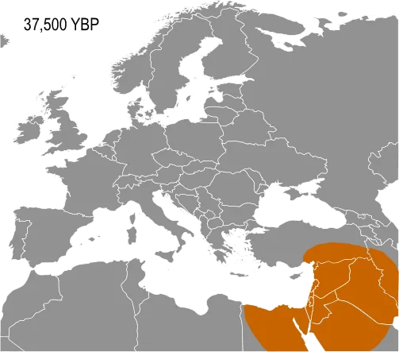

Transportul Preistoric
În epoca preistorică, transportul a fost esențial pentru viața și evoluția umană. Oamenii preistorici s-au confruntat cu provocări majore legate de deplasare și transportul de resurse, dar au dezvoltat soluții ingenioase pentru a le depăși.
Un exemplu notabil este mersul pe jos, care a fost principala formă de deplasare pentru oamenii preistorici. Această abilitate naturală le-a permis să exploreze teritorii noi, să caute hrană și să își extindă așezările. De exemplu, Homo erectus, un strămoș uman, a migrat din Africa spre alte continente, străbătând distanțe lungi pe jos.

Navigația pe apă a fost, de asemenea, importantă pentru transportul preistoric. Construcția de ambarcațiuni simple, cum ar fi canoele din trunchiuri de copaci sau plutele din bușteni, a permis oamenilor să exploreze și să exploateze resursele din regiunile de coastă și de-a lungul râurilor și fluviilor.
O altă inovație remarcabilă a fost tracțiunea animală. Unele culturi preistorice au domesticit animale pentru a le folosi ca mijloace de tracțiune. De exemplu, în Anatolia preistorică, oamenii au folosit bovine pentru a trage căruțe și alte vehicule simple, facilitând transportul mărfurilor și favorizând comerțul.
Chiar și în absența roților în forma lor modernă, oamenii preistorici au folosit dispozitive simple, cum ar fi rolele de lemn, pentru a ușura transportul încărcăturilor pe distanțe mai mari. Aceste inovații au permis oamenilor să transporte mai multe bunuri și să își eficientizeze resursele.
În plus, portarea și cărarea au fost metode comune de transport preistoric. Oamenii pur și simplu își cărau propriile încărcături atunci când alte mijloace de transport nu erau disponibile sau nu erau practice. Aceasta le-a permis să transporte materiale esențiale pentru supraviețuire, cum ar fi piatra și lemnul, pentru a-și construi adăposturi și unelte.